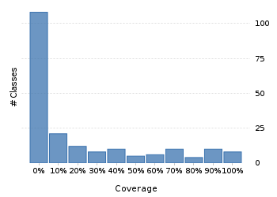
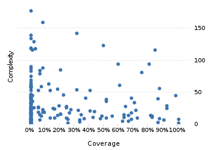

Project overview
Code coverage 228 classes, 4,003 / 21,538 elements
0.1858575518.6%
Test results 0 / 0 tests 0 secs
No test results
No test results could be found. Please ensure that you have instrumented your unit tests correctly.
Code metrics
4,882
12,842
3,814
228
157
7
68,718
27,801
6,977
0.54
3.37
16.73
32.57
1.83
Class Coverage Distribution

Class Complexity

Coverage tree map
Generating Coverage Tree Map. Please wait...

Top 20 project risks
BasicGJChronology
DateTimeZoneBuilder.PrecalculatedZone
DateTimeZoneBuilder
ZoneInfoCompiler
DateTimeFormatterBuilder.NumberFormatter
DateTimeZoneBuilder.OfYear
AssembledChronology.Fields
DateTimeZoneBuilder.RuleSet
ZoneInfoCompiler.DateTimeOfYear
DateTimeZoneBuilder.DSTZone
ZoneInfoCompiler.Rule
ZoneInfoCompiler.Zone
CachedDateTimeZone.Info
DateTimeFormatterBuilder.MatchingParser
DateTimeFormatterBuilder.Composite
ISODateTimeFormat.Constants
DurationFieldType.StandardDurationFieldType
DateTimeFieldType.StandardDateTimeFieldType
FieldUtils
DateTimeZone
Most complex packages
| 1. | 0.0583498185.8% |
org.joda.time 2458 |
| 2. | 0.1788051617.9% |
org.joda.time.format 1496 |
| 3. | 0.2288177322.9% |
org.joda.time.chrono 1239 |
| 4. | 0.177491617.7% |
org.joda.time.field 667 |
| 5. | 0.7404190374% |
org.joda.time.tz 535 |
Most complex classes
| 1. | 0.00% |
LocalDateTime 179 |
| 2. | 0.080082138% |
LocalDate 161 |
| 3. | 0.312977131.3% |
DateTimeZone 144 |
| 4. | 0.00% |
DateTime 141 |
| 5. | 0.00% |
PeriodFormatterBuilder.FieldFormatter 136 |